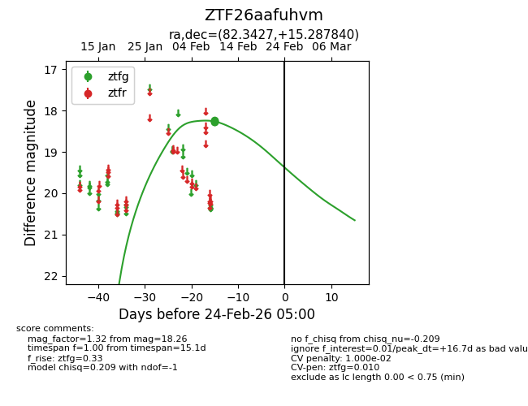
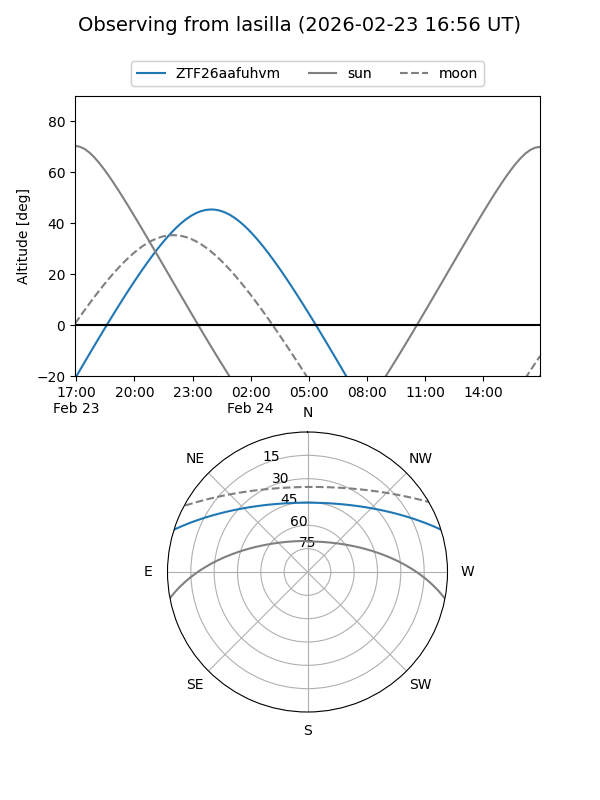
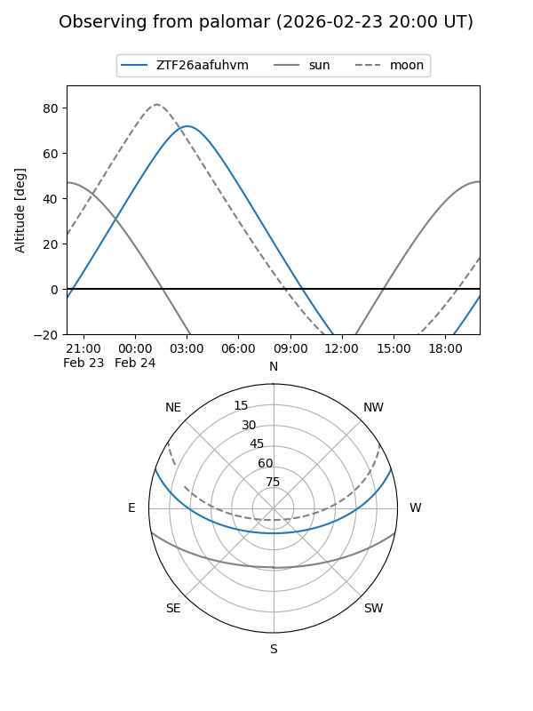

ZTF26aafuhvm
Target ZTF26aafuhvm at 2026-02-24 09:08
Aliases and brokers:
FINK: link
Lasair: link
ALeRCE: link
alt names
ZTF26aafuhvm (ztf,fink_ztf)
Coordinates:
equatorial (ra, dec) = 82.3427,+15.28784
equatorial (HMS+DMS) = 05:29:22.25,+15:17:16.22
galactic (l, b) = (189.6457,-10.40810)
Flags:
likely cv
Photometry:
last ztfg=18.26
4 ztfg detections
Lightcurve

Visibility


Additional plots